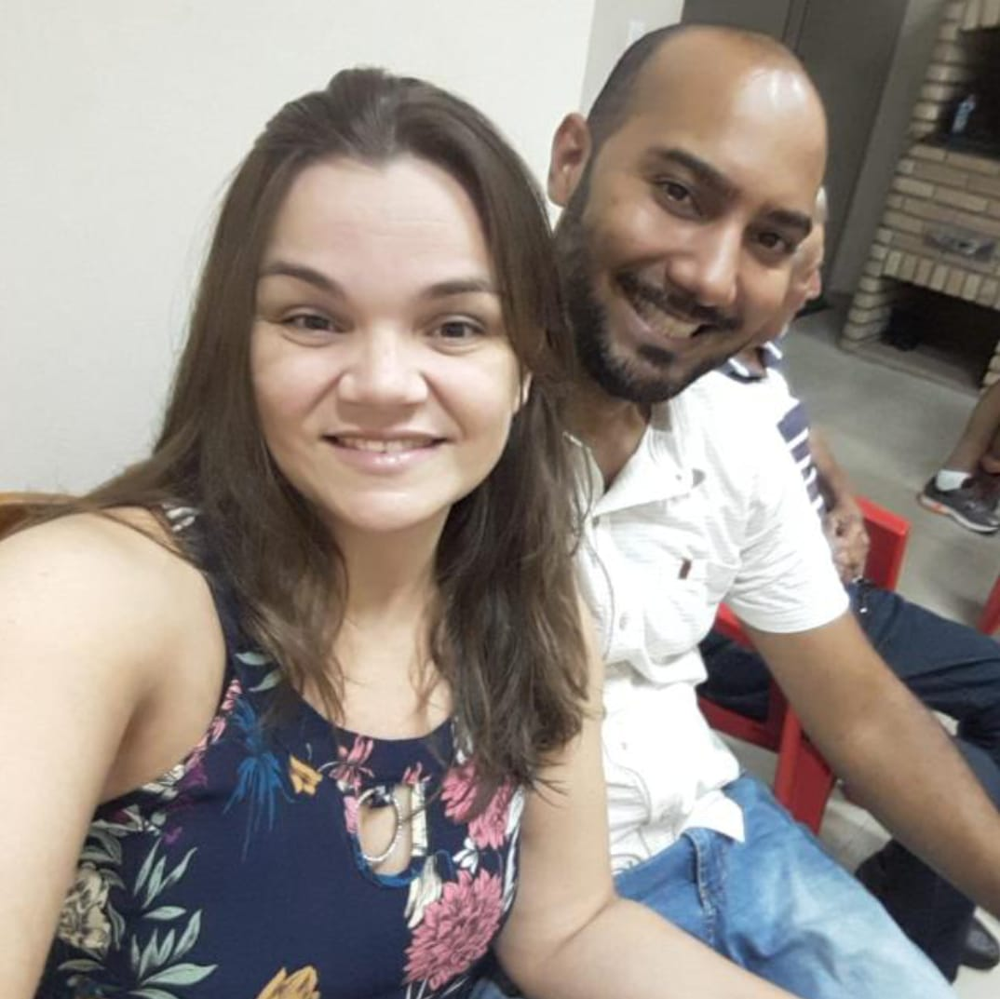

Lucas de Souza Lanaro
Matricula: 202308428497
Como responsável pelo design do projeto, destacou-se na configuração da experiência visual do site, gerenciando habilmente o CSS. Encarregou-se de estilizar cada elemento com criatividade, garantindo funcionalidade e uma estética envolvente. Com atenção meticulosa aos detalhes, garantiu que cada componente contribuísse para a identidade única do projeto, resultando em uma atmosfera cativante e estilizada.
André Luiz Lourenço Junior
Matricula: 202308428691

Como encarregado pela estruturação do site, manipulou tanto o HTML quanto o CSS e o JavaScript. Escreve códigos para garantir a funcionalidade do site, absorvendo sugestões da equipe para otimização e assegurando a implementação de cada funcionalidade. Seu foco está na harmonia entre design e desempenho.
Diego Wilkles Menezes
Matricula: 202308428667
Responsável pela estrutura da página da equipe, não apenas forneceu códigos essenciais, mas também cuidou da apresentação de cada membro na página. Sua contribuição não se limitou ao aspecto técnico; ele trouxe uma abordagem criativa que enriqueceu a experiência do usuário na plataforma.
Michael Dos Santos Bernardo
Matricula: 202308428543
Desempenhou um papel fundamental ao auxiliar na estrutura do site. Além de sua contribuição técnica, ele oferece ideias valiosas para aprimorar a experiência do usuário. Sua abordagem abrangente equilibra efetivamente a funcionalidade e a usabilidade.
João Victor Oliveira Cordasso
Matricula:202308396277
Especialista em conteúdo, contribuiu essencialmente para o sucesso do projeto, dedicando-se à criação e curadoria dos materiais. Sua habilidade em transmitir informações claramente fortaleceu a apresentação do relatório, tornando o conteúdo técnico acessível e impactante.